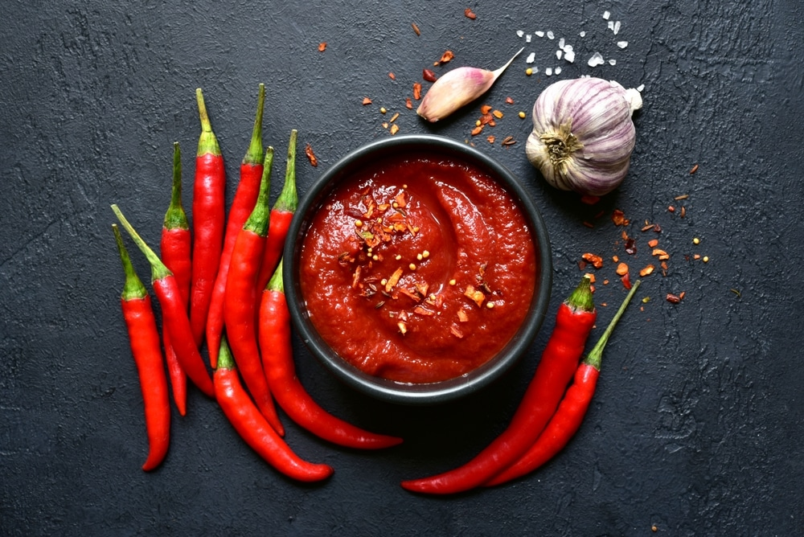

Nije dovoljno ljuto? Umaci koje morate probati
Objavljeno: 15.05.2026.

Za marinade, kuhanje ili samo začinjavanje gotovog jela - ljuti umak ima čarobnu moć da svaki, i naizgled najobičniji obrok, podigne na novu razinu. Predstavljamo pet umaka koji se razlikuju po profilu okusa, intenzitetu i podrijetlu, pa za svaki recept postoji onaj prikladan.
1. Sriracha
Tajlandski klasik na bazi crvenih čili papričica, češnjaka, šećera i octa. Kombinacija slatkoće i kiselosti čini ga izrazito pristupačnim i odličnim za umaćanje, ali i za dodavanje u juhe, marinade i preljeve za salate.
2. Tabasco
Jedan od najpoznatijih umaka u svijetu, jednostavnog sastava - papričice, sol i ocat, fermentirani mjesecima u drvenim bačvama. Izrazito je oštar i kiseo, pa nekoliko kapi zna biti dovoljno za cijeli tanjur.
3. Harissa
Sjevernoafrička pasta od pečenih čili papričica, kumina, češnjaka i maslinovog ulja. Karakterizira ju dimljeni, zemljani okus, savršena za kuskus, pečeno povrće ili kao baza za marinade za meso.
4. Sambal
Jugoistočnoazijski umak koji u svojoj osnovi sadrži svježe ili pirjane čili papričice s limetom, češnjakom i ribljim umakom. Svjež je, intenzivan i odličan uz rižu, tjesteninu ili pečenu ribu.
5. Gochujang
Korejska fermentirana pasta od čilija, riže i sojinog graška, prepoznatljiva po kombinaciji slatkog, ljutog i umami okusa. Koristi se u juhama, marinadama, ali i kao osnova za umake za pečenje na žaru.
Bez obzira na to koji umak odaberete, isplati se krenuti s malom količinom i postupno dodavati - intenzitet ljutine razlikuje se ne samo među umacima, nego i među pojedinim serijama istog proizvoda.
← Povratak na početnu stranicu